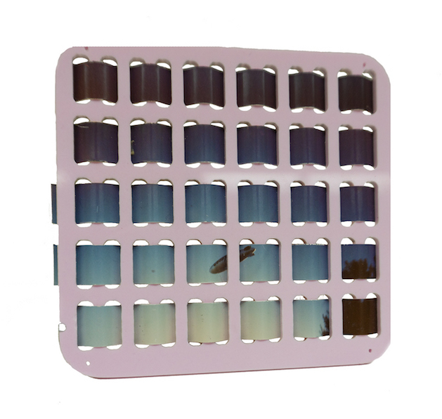
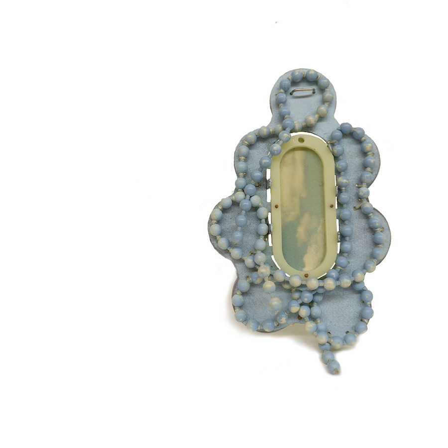

Steel, silver acrylic, found photo, plastic. 2023 4" x 2.5"
x 1/8"

Steel, silver, acrylic, found photo, plastic. 2023 4" x
4.5” x 1/8”
My work centers around discarded - peripheral materials; trash, discarded household items, paper scraps, and objects that have lost their agency or function to create jewelry and objects. I fabricate new narratives, bringing these collected materials from the margins into focus to explore memory and the subconscious, through the lens of nostalgia.
My work centers around discarded - peripheral materials; trash, discarded household items, paper scraps, and objects that have lost their agency or function to create jewelry and objects. I fabricate new narratives, bringing these collected materials from the margins into focus to explore memory and the subconscious, through the lens of nostalgia.